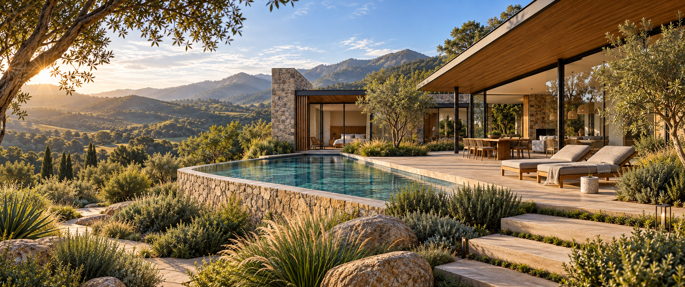
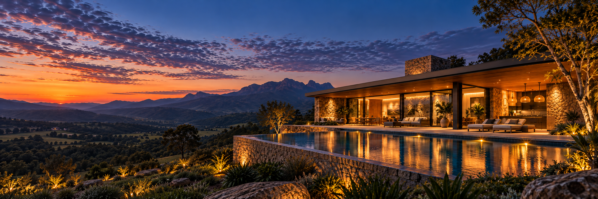
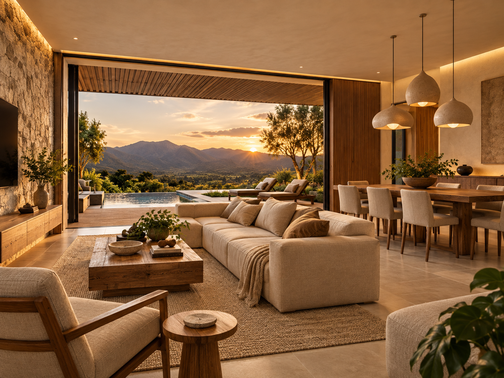

Arquitetura residencial
Casas que pertencem
à paisagem.
Projetos autorais que aproximam matéria, luz e a forma de viver de cada família.
Ver projetos ↓01
O escritório
Arquitetura nasce da escuta.
Desenhamos espaços que acolhem o cotidiano e atravessam o tempo.
À frente do escritório, o arquiteto Amauri Mattos conduz cada projeto de forma próxima — do primeiro traço à execução. A paisagem, os materiais naturais e a rotina de quem vai habitar orientam decisões precisas, sem excessos.
Acompanhar no Instagram ↗02
Projetos selecionados
Residências e interiores concebidos para o lugar, para a luz e para as pessoas.

Interiores
Refúgio Horizonte
A luz do fim do dia guia uma atmosfera tátil, serena e essencial. Madeira, pedra e fibras naturais constroem continuidade entre interior e paisagem.
Explorar o portfólio ↓
05 projetos selecionados
Portfólio
Clique em um projeto para ampliar a imagem e conhecer sua proposta.
03
Como podemos ajudar
Arquitetura
Projetos residenciais pensados a partir do terreno, do clima e da sua rotina.
Interiores
Ambientes coerentes, funcionais e sensoriais — do layout aos acabamentos.
Obras
Acompanhamento próximo para preservar a intenção do projeto em cada decisão.
Consultoria on-line
Orientação objetiva para transformar espaços com clareza, mesmo à distância.
04
Nosso processo
Do primeiro encontro
ao último detalhe.
- 01Escuta
Entendemos desejos, terreno, rotina e possibilidades.
- 02Concepção
Traduzimos o essencial em partido, forma e atmosfera.
- 03Desenvolvimento
Detalhamos escolhas para uma execução segura e fiel.
- 04Acompanhamento
Cuidamos da materialização do projeto junto à obra.
05
Vamos conversar